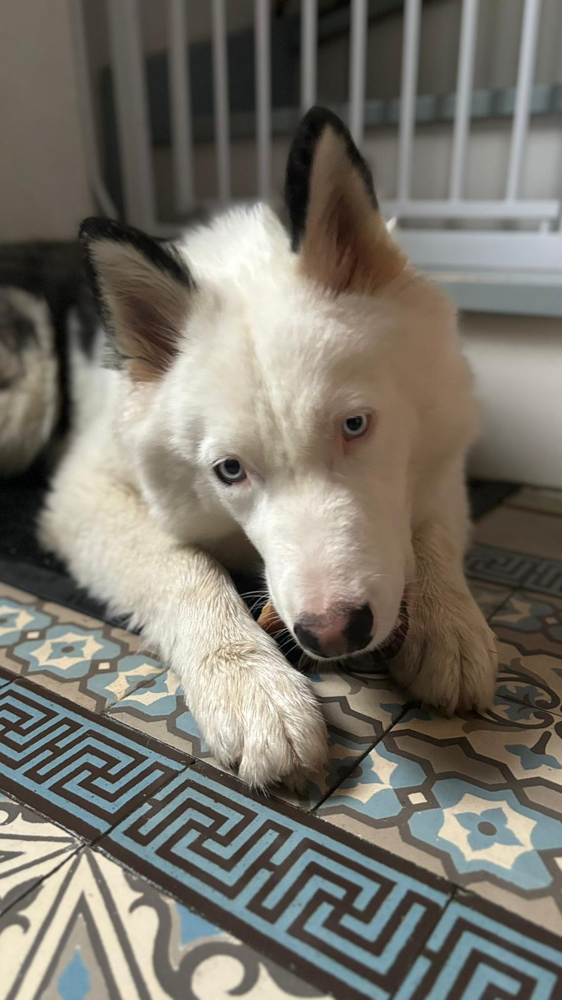

Ugo a disparu le 27 décembre 2023 à 17h00

S'il vous plaît, veuillez nous contacter seulement pour nous apporter une aide sérieuse.
Ugo n'est pas seulement un chien pour nous mais un véritable membre de notre famille.